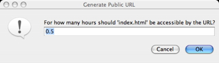

JetS3t Cockpit
Cockpit is a graphical Java application for viewing and managing the contents of an Amazon S3 account. It is freely available as part of the JetS3t project, which provides applications and a Java toolkit for Amazon's S3.
To run Cockpit as a Java Applet in your web browser
visit the Cockpit Online page:
Cockpit Online
Version 0.6.1, approximate download size 3 MB
Sun's JRE plugin version 1.4 or later is required, and you
will have to accept the certificate used to sign the
applet.

Cockpit offers the following capabilities:
- Manage buckets and objects in your Amazon S3 account
- Specify where your buckets will be located, in Europe or the United States
- Upload and download files
- Copy* or move* S3 objects within and between buckets
- Rename* one or more S3 objects
- Update the metadata* associated with S3 objects
- Manage Access Control List (ACL) permissions for buckets and objects
- Choose default ACL permissions for uploaded files, to make them publicly readable or writable
- Automatically compress (gzip) and/or encrypt uploaded files. The encryption algorithm is configurable in Cockpit's preferences.
- Uses sophisticated file comparison techniques to determine whether files have changed prior to uploading or downloading them, preventing unnecessary or accidental transfers
- Easily generate signed GET URLs to make your private objects publicly available to others for a limited time. If your bucket is available via a virutal host name, create a URL that references this domain
- Manage buckets owned by others (third-party buckets)
- Store your login credentials in password-protected files on your computer, online in S3 or in any available folder
- Easily manage Bucket logging settings
- Filter which S3 objects are listed, to find exactly what you are interested in
- Advanced configuration options
- When uploading files, specific file/directory paths can be ignored using .jets3t-ignore settings files
Items with a red star (*) are new in JetS3t version 0.6.1
Cockpit Users Manual
Running Cockpit
Cockpit may be run as a stand-alone application or as a browser applet.
To run the online browser applet visit Cockpit Online.
To obtain the stand-alone version download the JetS3t distribution and unzip the archive on your machine. Cockpit can then be run using the included cockpit start scripts.
Log in
When Cockpit starts, or when you select the Service -> Log in... menu item, the login dialog will be displayed. This dialog allows you to log in to S3, and also to manage your AWS login credentials by storing them in encrypted files with your own password.
The login dialog offers a choice of three ways to provide your credentials:
- Direct Login: Simply provide your AWS access and secret keys by copying and pasting them from Amazon's AWS Access Identifiers page. Your credentials are not stored anywhere.
- Local Folder: Your credentials are stored in a folder of your choice on your computer, or on any disk available to your computer (such as a USB thumb drive).
- S3 Online: Your credentials are stored online
in your S3 account and can only be accessed with the
correct Passphrase and Password.
The credentials are stored in a private bucket whose name is based on a hash of your passphrase. The credentials file itself is publicly readable but the object's name cannot be guessed as it is based on a hash of your password, as well as being encrypted with this password.
To store your credentials using S3 Online or Local Folder first choose the option Store in answer to the quetion "Would you like to log in or store your credentials?". Enter a password to encrypt your credentials, and a passphrase for S3 Online, and click the Store Credentials button. You will be prompted to enter your AWS Access Key and Secret Key which will be stored.
Manage your buckets
Once you have logged in to S3 you can manage your buckets. Upon log in all your buckets will automatically be displayed in Cockpit's left pane under the heading Buckets. If your buckets list is empty, it's about time you created a bucket!
To create a bucket, click the bucket action button (it has a gear icon and is on the top-right of the buckets pane) and choose the menu item Create new bucket.... You will be prompted to name your bucket. Notice that the default new bucket name includes your Amazon S3 ID string. It is a good idea to leave this string as a prefix for your bucket names to ensure your names are unique in the S3 system.
When you select a bucket name in the left pane Cockpit will list the objects stored in that bucket. This list will be displayed in the right-hand pane under the heading Objects.
Bucket Menu

The Buckets menu shows all the operations you can
perform on your buckets.
For convenience this menu can also be displayed as a
context menu if you right-click a bucket name.
- Refresh bucket listing: When Cockpit first logs in it caches the list of bucekts at that time. Use this menu item to refresh your bucket listing manually, to be sure the listing is up-to-date.
- View bucket properties...: Displays the bucket's properties such as its creation date.
- Update bucket's Access Control List...: View and change the access permissions of the selected bucket (see Access Control Lists)
- Create new bucket...: Creates a new bucket
- Add third-party bucket...: A third-party bucket is one owned by someone else but which is publicly accessible, or accessible to you. You can manually add third-party buckets to your listing with this menu item, and once you have done so you can perform whatever operations you like provided you have the necessary permissions. For example, the jets3t bucket containing Cockpit Online is publicly readable, so you can add this to your bucket listing. However you won't be allowed to do anything but look, sorry...
- Delete bucket...: Deletes the bucket after prompting for confirmation. Note that you can only delete empty buckets - if you try to delete a bucket containing some objects you will get an error message.
Bucket Location
When you create a bucket, Cockpit allows you to specify the bucket's name and the Amazon data centre location where the bucket will be created. A bucket may be located in the United States (the default location) or in Europe. Bucket's located in Europe will incur additional storage and access fees.
To create a bucket in the European (EU) location, the bucket's name must be a valid component of a DNS host name. Names which will not be valid as part of a host name cannot be used for buckets in the EU location, or for buckets that will be accessible via S3's virtual hosting feature. The Create Bucket dialog box provides feedback on whether or not the bucket name you have chosen is a valid DNS host name component.
As a general rule, DNS-compatible bucket names must be longer than 3 characters and must contain only lower-case letters, hyphens or full-stops.
Bucket Logging
Cockpit includes support for the new (beta) Server Access Logging capabilities of S3. Server Access Logging allows you to specific that some or all of your buckets will have their activity logged by Amazon. Amazon then delivers log files summarising the activity on your logged buckets to a bucket of your choice.
To activate logging for a bucket, start the Bucket Logging Status dialog via the menu Tools -> Configure Bucket logging.... In this dialog you simply choose a bucket to be logged from the Bucket list, set a log file prefix (text added as a prefix to the generated log files), and select a bucket to log to from the Log to list. Any changes you make in this dialog are applied when the Log to bucket is changed or selected.
The Bucket Logging Status dialog also shows the status of bucket logging for the selected Bucket. In other words, selecting a bucket from the Bucket list will cause Cockpit to query S3 for that bucket's logging status, which will then be displayed. Once the current status is displayed, you can change it or leave it as it is.
Be aware that the Log to bucket used for Server Access Logging must have special ACL permissions to allow the Amazon logging service to write log files to it. The ACL settings required are that the Amazon Logging group (http://acs.amazonaws.com/groups/s3/Delivery) have both READ_ACP and WRITE permission. Cockpit automatically makes the necessary ACL changes when you choose a Log to bucket in the Bucket Logging Status dialog, but if you wish to remove these settings later on you will have to do this yourself using the standard Bucket ACL Permissions dialog.
Manage your objects
When you log in to S3 and select a bucket the objects contained in that bucket are listed in the right-hand pane under the heading Objects. You can upload files to S3 by dragging-and-dropping them on the objects pane, or by using the Object Menu as described below.
Object Menu

The Objects menu shows all the operations you can
perform on your objects.
For convenience this menu can also be displayed as a
context menu if you right-click an object in the list.
- Refresh object listing: When Cockpit lists the contents of a bucket it caches the list of objects to avoid having to look them up again. Use this menu item to refresh your object listing manually, to be sure it is up-to-date.
- View or Modify object attributes...: Displays objects' properties, such as their size, content type, and their metadata information. You can modify the metadata information associated with objects.
- Copy or Move objects...: Displays a dialog that allows you to copy, move or rename objects within or between your S3 buckets.
- View or Modify Access Control Lists...: View and change the access permissions of the selected object(s) (see Access Control Lists)
- Download objects...: This menu item will prompt for a target directory, then download all the selected objects into that directory. If the objects being downloaded were stored in a directory structure (eg if you uploaded a directory containing other directories and files) that directory structure will be re-created in the target location.
- Upload files...: This menu item will prompt you to choose some files and/or folders to upload.
- Generate Public GET URL...: Generates a time-limited GET URL string that will allow anyone with the URL to access an object for a limited amount of time. This operation will prompt you for the number of hours until the URL will expire (the number can be a fraction, eg 0.5 for 30 minutes) and will generate the appropriate signed URL. See Time-limited URLs.
- Generate Torrent URL...: Generates a URL that points to a BitTorrent file, allowing the object to be downloaded with a BitTorrent client application.
- Delete objects...: Deletes the currently selected object or objects, after prompting for confirmation.
Object Filtering
Cockpit allows you to apply filtering to determine which objects are listed in the objects pane. This filtering provides a convenient way to reduce the number of objects displayed by Cockpit, and as the filtering is applied by S3 when listing objects it can also greatly reduce the time required to list the relevant contents of buckets with many objects.
Filtering is turned on by selecting the Filter objects check box. By default no filtering is applied as the Prefix and Delimiter filtering options are blank. Filtering is applied by entering a prefix or a delimiter or both:
- Prefix: Only objects with keys that start with
the prefix will be listed. The prefix can be anything
from a partial string or single character, up to the
entire name of an object.
If object keys are divided into logical "directories" in your S3 account using forward-slashes (/), or indeed any character, only the contents of a "directory" can be displayed by using the directory name and the slash (eg "Documents/"). - Delimiter: Only objects with keys that match the prefix (if it set) and that end with the delimiter will be displayed. The delimiter is most useful when your object keys are divided into logical "directories" separated by a character, such as a forward-slash (/). In this case, specifying "/" as the delimiter will limit the object listing to only top-level items or directories.
Filtering can be applied before objects are listed, such as by specifying a filter before clicking on a bucket for the first time- this is particularly useful for buckets with many objects. Alternately, filtering can be applied on a current listing by changing the prefix and/or delimiter and pressing return to trigger a refresh of the objects.
The exact behaviour of the S3 filtering mechanism can be a little hard to understand, so play around with it to get a feel for how it works. There is also some documentation available in the Amazon Resource Center's S3 Developer Guide, in the section on Listing Keys Hierarchically.
Upload files to S3
You upload files to S3 by selecting a target bucket, then either dragging-and-dropping files onto the Objects listing or selecting the Object Menu item Upload file(s).... Before uploading, Cockpit examines the files (this may take some time for large files) and uploads them to S3 provided there are no clashes (see Automatic File Comparisons).
Cockpit displays a progress dialog during uploads showing how much of the total data has been uploaded. Uploads can be cancelled at any time.
If a folder is uploaded Cockpit will upload the folder and all its contents, storing enough information to re-create the folder structure exactly when it is downloaded. It does this by creating an empty object for each folder or sub-folder, and tagging the object with the content type application/x-directory.
Upload Preferences
Cockpit can be instructed to perform additional tasks when it uploads files by setting Upload options in the Cockpit Preferences dialog box available from the menu item Tools -> Preferences....
Preferences are not saved by Cockpit, and will have to be re-set each time you run the application.
The Upload preferences allow you to set:
- ACL Permissions: The Access Control List permissions to apply to uploaded objects.
- Compression: Whether to compress (gzip) files
before uploading them.
Compressing files may save space in S3 and reduce the time taken for uploads provided the files compress well, however note that some files such as movies and music do not generally compress well. - Encryption: Whether to encrypt files before
uploading them. If encryption is turned on you must also
set a password in the Encryption preferences section.
Encrypting files may help to protect sensitive information, especially if you don't trust the operators of S3. The encryption relies on a password you provide, and files will only be readable by someone with that password.
Note: Beware of using more than one password in a bucket, as Cockpit is only smart enough to handle one password at a time when downloading.
Please be aware that Cockpit does not presume to offer industrial-strength encryption - by default it uses a standard low-strength algorithm available in all versions of Java (PBEWithMD5AndDES). This algorithm can be changed using the advanced configuration options available in JetS3t, but doing so is not easy.
Download files from S3
Cockpit does not allow files to be downloaded using drag-and-drop - unfortunately the Java Swing library makes this infeasible. To download objects from S3 you must select the objects you want, then choose the Object Menu item Download object(s).
Before downloading Cockpit compares any files present in the target location against the objects in S3 and detects any clashes (see Automatic File Comparisons). If you download objects contained in a folder structure, that folder structure will be re-created exactly on your computer (provided the files were initially uploaded with a jets3t tool).
Cockpit will automatically unzip GZipped objects and decrypt Encrypted objects, though you will have to set your encryption password in the Cockpit Preferences dialog before you can download encrypted objects.
View or Modify Object Attributes
When you select the View or Modify Object Attributes... menu item for one or more objects, Cockpit displays the Object Attributes dialog.

This dialog displays the attributes for each of the objects you selected, and you can step through multiple objects using the left and right arrow buttons. Each object has two kinds of attributes: standard attributes such as Size and Last Modified Date that you cannot change, and Metadata attributes such as Content-Type that you can change.
In this dialog, you can add and remove the metadata items associated with an object using the green plus and minus buttons, and you can change the name or value of a metadata item by double-clicking an entry in the Metadata Attributes table. Note that metadata item names can contain only standard English (ASCII) characters and cannot contain spaces.
The S3 service supports a subset of HTTP header metadata values, such as Content-Type and Content-Disposition. When you create a metadata item with a HTTP header name that S3 recognizes, Cockpit will store the metadata using exactly this name. This means that you can easily set and change the content type value associated with an object in S3, and these HTTP header values will be returned to web browsers that access your objects.
If you create a metadata item with a name that S3 will not recognize, such as "my-metadata-name", cockpit will automatically alter the metadata name behind the scenes to include the prefix x-amz-meta- prefix. This will allow S3 to store the metadata information even though it does not recognize the name as a valid HTTP header.
Copy, Move or Rename Objects
When you select the Copy or Move objects... menu item for one or more objects, Cockpit displays the Copy or Move Objects dialog.

This dialog allows you to do many things with the objects already stored in your S3 account.
To copy objects from one bucket to another, select the name of the destination bucket in the Copy to Bucket field. To move objects to another bucket, first select the destination bucket then select the Move Objects checkbox. The only difference between copying and moving objects, is that when you select the move option Cockpit will automatically delete the original object after it has been successfully copied.
As a convenience, Cockpit allows you to specify the access permissions that will apply to the newly copied or moved objects. If you leave the access permissions Unchanged, the new objects will have the same access control settings as the original objects. Alternatively, you can choose to make the new objects Private or Publicly Accessible.
The Copy or Move Objects dialog also allows you to change the name of your S3 objects when they are copied or moved. By default, the names of the objects you copy or move will be left unchanged. However, if you select the Rename objects with pattern option you can specify a renaming pattern that will apply to each object.
Renaming patterns can contain any text values, so you can easily rename a single S3 object by simply typing in its new name directly. However, things get more difficult when you are working with multiple objects at once, because each destination object must have a unique name. To help you rename multiple objects at a time, Cockpit supports a number of pattern variables that you can use to construct your destination object names. As you build your renaming pattern, Cockpit displays a preview of the object names that your pattern will produce, so you can make sure it is doing what you want.
Here are the pattern variables you can use when renaming objects:
- {key} The full key/name of the original objects. This variable is useful if you want to add a "subdirectory" prefix to your objects, in which case you could apply the pattern new/subdir/prefix/{key}
- {path} The "subdirectory" path of the original objects, for example an object named "this/is/my/object.txt" will have a path value of "this/is/my/".
- {filename} The filename portion of the original objects' names, for example an object named "this/is/my/object.txt" will have a filename value of "object.txt". This variable is useful if you need to move objects stored in one "subdirectory" to another one, in which case you could apply the pattern new/subdir/{filename}.
- {basename} The portion of the objects' filename prior to the extension, for example an object named "this/is/my/object.txt" will have a basename value of "object". This variable is useful if you need to change the filename extensions for a number of objects, in which case you could apply the pattern {basename}.newext. If the original objects included a "subdirectory" portion in their names, you can retain this path informaiton by including the {path} variable like so: {path}{basename}.newext.
- {ext} The extension portion of the objects' filenames, for example an object named "this/is/my/object.txt" will have an ext value of "txt".
- {count} This variable assigns a unique integer value to every object in alphabetical order, starting from 1. This variable is not likely to be useful very often, but it may help if you need to move multiple objects with the same name into a single "subdirectory".
Access Control Lists
Amazon S3 uses Access Control List (ACL) settings to control who may access or modify items stored in S3. By default, all buckets and objects created in S3 are accessible only to the account owner - they are completely private.
Cockpit allows you to change the ACL settings for a bucket, or for one or more objects, by selecting the Update Access Control List menu item in the bucket or object menus. ACL settings are managed in the Update Access Control List dialog.
The default ACL setting is for the object's creator, represented by a Canonical ID, to have Full control.
The most common ACL change is to allow public access to a bucket or object. An object is made publicly accessible in S3 by granting READ access to members of the All Users group. To do this:
- Click the plus (+) button underneath the Group Grantees table, to add a new Group permission
- Make sure the Group URI is set to http://acs.amazonaws.com/groups/global/AllUsers by double-clicking the URI and selecting it
- Set the Permission option to READ if necessary by double-clicking it
- Save the changes using the Save Permission Changes button
Note that you can also used signed GET URLs to make an object publicly available for a limited time.
Although all ACL combinations supported by Amazon S3 can be managed using this dialog box, this is a complex topic and we won't deal with it here. Please refer to Amazon's technical documentation for more information about the use of Access Control Lists.
Automatic File Comparisons
Cockpit automatically compares files that are being uploaded or downloaded with files in the destination to detect clashes. When a file with the same name exists on the target, Cockpit determines whether the file has changed, and if so which version of the file is the most recent.
Each file is given one of the following status types:
- New File: The file does not exist in the destination
- Unchanged: The file is identical to the copy in the destination
- Changed: The file has been changed
If there are Unchanged or Changed files, the Replace file(s) dialog is displayed.

This dialog allows you to choose which clashing files in the destination should be replaced, if any. The options available may include the following:
- Only upload/download new file(s): Only files that do not already exist in the destination will be uploaded or downloaded. No existing file will be over-written.
- Upload/download new and changed file(s): New files and changed files will be transferred, but files that are unchanged will not be transferred. Only out-dated files will be over-written.
- Upload/Download all files: All the files will be uploaded or downloaded, regardless of what files are in the destination. Any existing files will be over-written.
File comparisons are performed using MD5 hashes of the file contents.
Signed GET URLs
A private object stored in S3 can be made publicy available for a limited time using a signed GET URL. The signed URL can be used by anyone to download the object by using the URL in their web browser, up until a chosen time after which the URL will no longer work.
Time limited URLs are created using Object Menu item Generate Public GET URL.... A dialog is displayed prompting for the number of hours until the URL will expire. This number can be a fraction, for example the value 0.5 will create a URL which works for half an hour. If the object is stored in a bucket that is accessible via a virtual host name, for example http://my.hostname.com, you can create a signed URL based on that host name by ticking the "Bucket is a virtual host?" checkbox.

After providing the number of hours the dialog box will contain a lengthy URL. This URL will work in any web browser, but only for the length of time you specified. Send this URL to the person who needs the object.
Advanced Configuration
Users can configure Cockpit using the advanced configuration files described in the Configuration section.
When Cockpit starts it looks for configuration files in the directory <UserHome>/.jets3t. If this directory exists and contains files called jets3t.properties and/or mime.types it will load the properties from these files, adding to or replacing any default configurations.
Files in the user's home directory will be read whether Cockpit is run in stand-alone more, or as an applet. This configuration option is most useful for those users who run Cockpit as an online applet, but wish to have more control over their own settings.